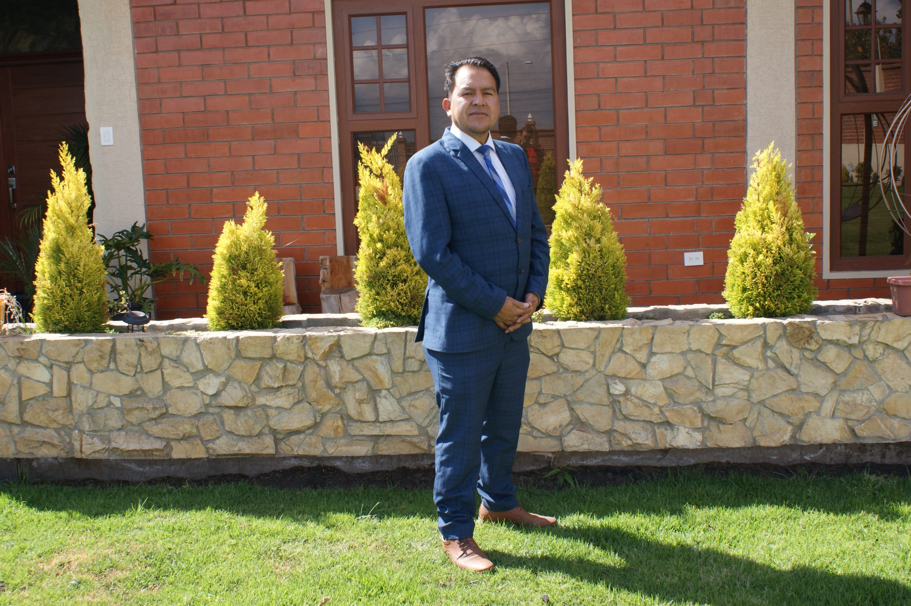

Conoce más sobre nuestra parroquia, nuestras autoridades y los proyectos que impulsamos para el desarrollo comunitario. Huachi Grande es una parroquia rural con historia, compromiso y visión hacia el futuro.
Presidente
Vicepresidente
Primer Vocal
Segundo Vocal
Tercer Vocal
Huachi Grande está encaminada al desarrollo y desde el Gobierno Parroquial impulsamos obras que mejoren la calidad de vida de sus habitantes.
Los huertos que rodean a Huachi Grande embellecen su territorio rural y la cadena montañosa de los Andes protegen sus horizontes agrícolas.
En Huachi Grande gran parte de su población es mestiza, ejemplo de gente valiente y esforzada que ha dejado un legado de historia y libertad.
Altura / msnm
Superficie / Km²
Habitantes
Temperatura °C
Para llegar a ser la parroquia que ahora es, Huachi Grande tuvo que pasar por una serie de vicisitudes, entre ellas la destrucción casi total de su caserío en el terremoto del 5 de agosto de 1949, que afectó al cantón Ambato y en especial a Huachi.
Además, la historia de su pueblo está íntimamente ligada a la del país, pues en sus territorios se libraron grandes batallas por la independencia entre republicanos y españoles, como la del 22 de noviembre de 1820 liderada por el Mariscal Antonio José de Sucre.
Actualmente Huachi Grande es una parroquia que emergió desde las cenizas del terremoto, con el apoyo de su gente unieron los esfuerzos para reconstruir la plaza y la iglesia central, proyectándose como ciudad satélite del cantón Ambato.